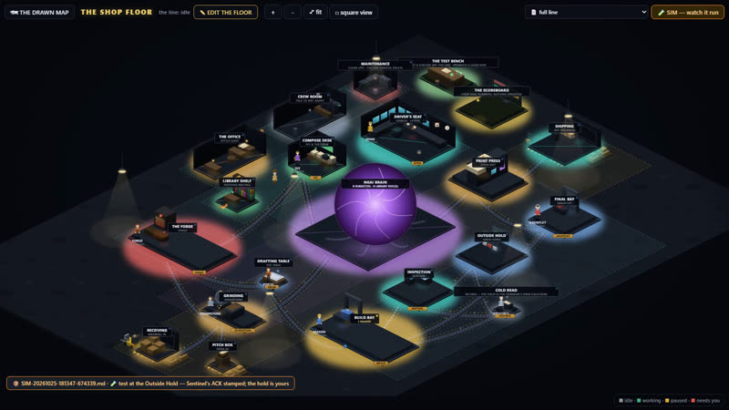

01
La fábrica
La fábrica · escribe documentos de formación
Un constructor de modelos para empresas que trabajan con agentes de IA. La fábrica es un constructor de modelos. Usted organiza la planta, agrega estaciones, le asigna a cada una un trabajador y un modelo, y traza las bandas transportadoras entre ellas. Ve toda la empresa, funcionando, como una imagen. Alguien que nunca ha usado IA puede hacerlo con clics y disfrutarlo. Nuestra propia línea escribe documentos de formación así: un agente redacta, un segundo verifica, una persona revisa, se hace una auditoría final, y nada sale sin el sí de una persona. También puede esbozar con nosotros su propio proceso en la planta, y nosotros lo convertimos en una línea que funciona. El video la muestra funcionando.
El trabajo de prueba de la propia fábrica recorriendo toda la línea: Forge, Mason, Sentinel, el Outside Hold, el Final Bay. Trabajo de demostración; no se gastó nada. (Si ve al gato persiguiendo al ratón, es real. Agregamos pequeños detalles solo por diversión.)
